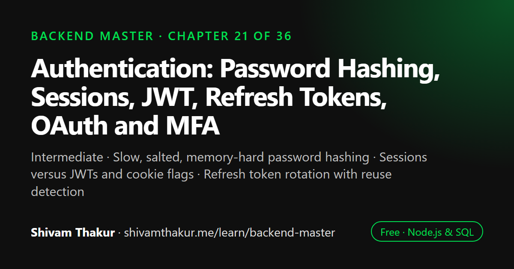

Chapter 21 of 36 · Intermediate
Authentication: Password Hashing, Sessions, JWT, Refresh Tokens, OAuth and MFA
Authentication — Proving Who Someone Is

Authentication proves who a user is. This chapter measures why SHA-256 is wrong for passwords and argon2id is right, builds cookie sessions and short-lived JWTs with rotating refresh tokens and reuse detection, implements TOTP verified against the RFC vectors, explains OAuth with PKCE, and attacks each piece to show why the defences exist.
In this chapter you will learn
- Slow, salted, memory-hard password hashing
- Sessions versus JWTs and cookie flags
- Refresh token rotation with reuse detection
- Preventing user enumeration, timing leaks and brute force
- TOTP MFA, OAuth, OIDC and PKCE
21.0 Why This Chapter Matters
Every protected endpoint you ever write begins with one question: "Who is this?" Get it wrong and the consequences are the worst in software: stolen accounts, leaked customer data, fraudulent orders, headlines.
Authentication is also where well-meaning developers do the most damage by being creative. The industry's hard-won rule is: don't invent; use proven constructions, configured correctly. This chapter shows you those constructions, then attacks them, so you see why each defence exists:
- Password storage: why SHA-256 is wrong, and argon2id/bcrypt/scrypt are right (with measured numbers).
- Sessions vs JWTs: how each works, how each fails, how to revoke.
- The classic attacks: user enumeration, timing leaks, brute force, token forgery (
alg: none), refresh-token theft. - Refresh-token rotation with reuse detection, tested.
- MFA with TOTP, verified against the official RFC test vectors.
- OAuth2 / OpenID Connect and PKCE (the code-challenge maths verified against the RFC).
- Recovery flows, passkeys, and the checklist of what production auth needs.
Part 4 is about not getting hacked, not shipping bugs, and not falling over. Authentication is the front door of all three.
21.1 Authentication, Authorization, and Identity
| Term | Question it answers | Example |
|---|---|---|
| Identification | "Who do you claim to be?" | asha@example.com |
| Authentication (AuthN) | "Prove it." | password, TOTP code, passkey |
| Authorization (AuthZ) | "What are you allowed to do?" | admin can read /admin/stats (Chapter 22) |
| Session / token | "Remember that you proved it." | cookie, JWT |
The factors you can use to prove identity: something you know (password), something you have (phone, hardware key), something you are (biometric). Multi-factor authentication (MFA) combines two different kinds.
Our module's endpoints (all in auth-app.mjs):
POST /register create account (argon2id)
POST /login/session password → server-side session cookie
POST /login/token password → short-lived JWT + rotating refresh token
POST /refresh rotate refresh token
GET /me/session | /me/token | /admin/stats protected routes
POST /logout destroy session21.2 Storing Passwords
The rule
Never store passwords. Store the output of a slow, salted, purpose-built password hash. Never encrypt (encryption is reversible); never use a fast hash (SHA-256, MD5, SHA-1).
Why "fast" is fatal: measured
We timed one core (Node 22, my laptop) hashing the same password with several algorithms:
SHA-256 (sync loop, Node call overhead included) 198,388 hashes/s
scrypt N=2^14 87 ms/hash ≈ 11 guesses/s per core
bcrypt cost 10 (bcryptjs, pure JS) 94 ms/hash ≈ 11 guesses/s
bcrypt cost 12 544 ms/hash ≈ 2 guesses/s
argon2id m=19 MiB, t=2, p=1 (OWASP minimum) 65 ms/hash ≈ 15 guesses/s(My first SHA-256 number was 89,116/s, dominated by the await in my benchmark loop; the sync loop gives ~198k/s, still dominated by Node's per-call overhead. Dedicated cracking software on GPUs is millions to billions of times faster than a JS loop; I did not measure that, but it's why the attacker's speed, not yours, is the number that matters.)
The design goal is the opposite of normal engineering: make each hash take tens to hundreds of milliseconds. A legitimate user logs in once (60 ms is invisible); an attacker trying a billion guesses needs a billion × 60 ms. Argon2id and scrypt are also memory-hard (they need megabytes of RAM per hash), which makes GPU/ASIC parallelism expensive.
Salting: same password, different hash
$argon2id$v=19$m=65536,t=3,p=4$7THJJ27vetUJ0e66Y0RSDA$tjTWYmf+9GRYSz8SQcTRVC7sgZieESTOAEDKIoHMTyk
$argon2id$v=19$m=65536,t=3,p=4$BPg9kzDBrReedNV2I2ZcUw$6wFciodRLbBqX3hYpxBz7IcM7FFVcP2q35aPm8eWGLE
hashes equal? false | both verify? true true | wrong pw: false
unsalted SHA-256 of same password equal? true <- identical => rainbow tables / "who shares a password" leaksBoth argon2 strings come from the same password, yet differ, because a random salt (the 7THJ… / BPg9… part) is mixed in and stored inside the string alongside the algorithm and parameters (m=65536,t=3,p=4). Unsalted hashes of the same password are identical, which lets an attacker (a) use precomputed rainbow tables, and (b) see which users share a password. argon2.verify(hash, password) reads the salt and parameters from the hash itself. You store one string.
Which algorithm?
| Algorithm | Use? | Notes |
|---|---|---|
| Argon2id | First choice | Memory-hard; OWASP minimum ≈ m=19 MiB, t=2, p=1; we used exactly this |
| scrypt | Good | Built into Node's crypto; memory-hard |
| bcrypt | Fine, widely deployed | Cost ≥ 10 (we saw cost 12 ≈ 0.5 s); 72-byte input limit |
| PBKDF2 | Acceptable where required by compliance | Not memory-hard; use very high iterations |
| SHA-*/MD5, "salted SHA-256" | Never | Too fast |
The bcrypt truncation gotcha, demonstrated:
const long = 'a'.repeat(72);
const bh = await bcrypt.hash(long + 'DIFFERENT-TAIL', 4);
await bcrypt.compare(long + 'another-tail', bh); // true ← characters after byte 72 are ignoredLimit password length (e.g., max 128 characters) and, for very long passphrases, pre-hash carefully, or prefer argon2id.
Upgrading hashes over time
Hardware improves; raise the cost factors, then re-hash on successful login (you only have the plaintext at that moment). Our login does exactly that:
if (argon2.needsRehash(u.password_hash, ARGON)) await pool.query('UPDATE users SET password_hash = $2 WHERE id = $1', [u.id, await argon2.hash(password, ARGON)]);(needsRehash returned true for a hash created with weaker parameters than the policy, false for one that already matched.) The same mechanism migrates users from an old algorithm (bcrypt → argon2id) transparently.
Password rules that actually help (NIST SP 800-63B)
- Length over complexity: require a decent minimum (our registration demands ≥ 12 and ≤ 128), allow all characters and spaces, allow paste (password managers).
- Don't force periodic rotation or "must contain a symbol" rules; they produce
Password1!→Password2!. - Check against breached/common passwords (e.g., the Have I Been Pwned k-anonymity API, where you send only the first 5 hex characters of the SHA-1 and compare locally). (Described only: not run.)
- Rate-limit guessing (§21.5); offer MFA.
Registration validates types too, because JSON can carry objects (Chapter 18's operator injection):
register with object password (type attack) 400 {"title":"email must be valid; password 12-128 chars"}21.3 Sessions: Server-Side State in a Cookie
After the password check you need a way to remember the user across requests (HTTP is stateless, Chapter 3). Option 1: a session. The server stores state keyed by a random id; the browser holds only the id, in a cookie.
Browser Server Redis
│── POST /login/session ───────────────►│ verify password
│ │── SET sess:<hash(id)> {uid, role} EX 3600 ─►
│◄─ Set-Cookie: sid=<random 256-bit> ────│
│── GET /me (Cookie: sid=…) ────────────►│── GET sess:<hash(id)> ─► {uid, role}
│◄─ 200 ─────────────────────────────────│The login handler (from the tested module):
const sid = newToken(); // crypto.randomBytes(32).toString('base64url')
await redis.set(`sess:${sha256(sid)}`, JSON.stringify({ uid: u.id, role: u.role }), { EX: 3600 });
res.cookie('sid', sid, { httpOnly: true, secure: true, sameSite: 'lax', maxAge: 3600 * 1000, path: '/' });The actual response header we captured:
Set-Cookie: sid=<256-bit random>; Max-Age=3600; Path=/; Expires=Fri, 13 Nov 2026 11:50:20 GMT; HttpOnly; Secure; SameSite=LaxThe three cookie flags that matter
| Flag | Protects against | How |
|---|---|---|
HttpOnly |
XSS stealing the session | JavaScript can't read the cookie (document.cookie) |
Secure |
Sniffing on the network | Sent only over HTTPS |
SameSite=Lax/Strict |
CSRF (Chapter 23) | Not sent on cross-site POSTs/subresource requests |
Also: a short Max-Age, a narrow Path/Domain, and the __Host- cookie-name prefix (forces Secure, no Domain) for extra safety.
Why the session id is hashed in Redis
We store sess:<sha256(id)>, not sess:<id>:
Redis key holds only a HASH of the id: sess:08729f7e92db05a…If someone gets read access to Redis (a backup, a debug endpoint), they can't turn the keys into usable cookies, the same logic as password hashes (a fast hash is fine here because the id is 256 bits of randomness, not a guessable password).
Properties of server-side sessions
Pros: instant revocation (delete the key), tiny cookie, data stays on the server, easy "log out everywhere." Cons: every request needs a Redis/DB lookup; state to scale and replicate (Chapter 29); cookies are browser-centric.
Our test proves revocation:
GET /me/session with cookie 200 {"via":"session","uid":"1","role":"admin"}
GET /me/session without cookie 401
logout 200
GET /me/session after logout (server-side revoke) 401(Note "uid":"1" is a string: Postgres bigint again, Chapter 13.)
Session fixation, and why every login mints a new id
In a fixation attack, the attacker plants a known session id in the victim's browser before login; if the server keeps that id after login, the attacker now shares an authenticated session. The defence is simple: generate a fresh id at every login (and on privilege changes). Our handler never accepts a client-supplied id; it always creates a new one.
In real projects
Use express-session or a framework's session module with a proper store (connect-redis), rather than hand-rolling. I built the minimal version here so every line is visible and testable.
21.4 Tokens: Stateless JWTs
A JSON Web Token (JWT) is a signed, self-describing token: header.payload.signature, each part base64url-encoded. The server can verify it without any lookup, so it's popular for APIs and mobile apps.
We issue one at login. Decoded, exactly as produced:
header : {"alg":"HS256"}
payload: {"role":"admin","sub":"1","iss":"https://api.shopline.dev","aud":"shopline-web",
"iat":1794567022,"exp":1794567622,"jti":"32191f76-6481-4286-9a1c-51516e88c081"}Claims: sub (subject = user id), iss (issuer), aud (audience: who the token is for), iat/exp (issued/expires), jti (unique id). The signature is an HMAC of header.payload with a secret only the server knows.
⚠️ A JWT is signed, not encrypted. Anyone can base64-decode the payload (we just did). Never put secrets in it.
Verifying correctly: pin everything
await jwtVerify(token, JWT_SECRET, { algorithms: ['HS256'], issuer: ISS, audience: AUD }); // exp is checked automaticallyWe then attacked it. Every attack below was sent to the real endpoint:
tampered payload (role→admin, sub→999), original signature 401 ERR_JWS_SIGNATURE_VERIFICATION_FAILED
alg:none token claiming admin 401 ERR_JOSE_ALG_NOT_ALLOWED
expired token 401 ERR_JWT_EXPIRED
wrong audience 401 ERR_JWT_CLAIM_VALIDATION_FAILED
signed with a different secret 401 ERR_JWS_SIGNATURE_VERIFICATION_FAILEDAll five were rejected. Now the vulnerable verifier that appears in many tutorials: it reads the token's own header to decide how to verify:
if (header.alg === 'none') return JSON.parse(Buffer.from(payload, 'base64url')); // "unsecured JWT": no signature neededNAIVE verifier given the alg:none token -> {"sub":"1","role":"admin"} <- ACCEPTEDAn attacker who can craft {"alg":"none"} and a payload claiming "role":"admin" walks straight in. A close cousin is algorithm confusion (a server expecting RS256 that accepts HS256 and uses its public key as the HMAC secret; described only, not run). The rule that prevents both: the server decides the algorithm (algorithms: ['HS256']), never the token, and use a maintained library (jose), never hand-rolled verification.
Signing choices
| HS256 (shared secret) | RS256/ES256/EdDSA (key pair) | |
|---|---|---|
| Who can verify | Anyone holding the secret (can also forge) | Anyone with the public key (can't forge) |
| Use when | One service issues and verifies | Many services verify tokens issued by one auth service (publish the public key as a JWKS endpoint) |
The honest downsides of JWTs
- No built-in revocation. A valid JWT works until
exp. If a token is stolen or a user is banned, you can't "delete" it (you'd need a deny-list, which brings back state). - Size: bigger than a session id on every request.
- Storage: where does the browser keep it?
localStorageis readable by any XSS; anHttpOnlycookie isn't. (More in Chapter 23.)
Hence the standard design: short-lived access tokens (10 minutes) + a revocable, rotating refresh token.
21.5 Refresh-Token Rotation With Reuse Detection
An access token lives 10 minutes. To avoid re-entering the password, the client holds a refresh token (long-lived, opaque random string stored hashed in the database, so it can be revoked) and trades it for a new access token.
Rotation: each refresh returns a new refresh token and invalidates the old one. Reuse detection: if an old token appears again, someone has a copy, so revoke the entire family.
login ─► R0 (family F)
refresh(R0) ─► R1, R0 marked used
refresh(R1) ─► R2, R1 marked used
attacker replays R0 ─► REUSE DETECTED ─► revoke all of F ─► legitimate holder of R2 must log in againThe handler (inside one transaction, with a row lock):
const { rows: [t] } = await c.query('SELECT * FROM refresh_tokens WHERE token_hash = $1 FOR UPDATE', [sha256(refresh_token)]);
if (t.used_at) { await c.query('UPDATE refresh_tokens SET revoked = true WHERE family_id = $1', [t.family_id]); … return 401; }
await c.query('UPDATE refresh_tokens SET used_at = now() WHERE token_hash = $1', [t.token_hash]);
/* insert the next token in the same family, issue a new access token */Test output:
use refresh #0 -> 200 (new access + new refresh issued)
use refresh #1 -> 200
REPLAY of old refresh #0 (a stolen copy) 401 {"title":"Refresh token reuse detected; session family revoked"}
legit holder of #2 now locked out (family revoked) 401
two simultaneous refreshes of one token -> 200 401 (row lock: exactly one wins)
DB stores only hashes: e83787fdba7a29fc…Three things to notice: the stolen token was detected on replay; the family was killed (the legitimate user is inconvenienced, which is the right trade if a theft occurred); and two simultaneous refreshes with the same token produced one 200 and one 401, because FOR UPDATE serialises them (Chapter 16: without the lock, both could succeed and the family would fork). Real clients should handle a rare spurious 401 by re-authenticating, and many systems add a short grace window for network retries. (Not implemented here.)
Sessions vs JWT + refresh: choosing
| Server-side session | JWT access + refresh | |
|---|---|---|
| Revocation | Immediate | Access: wait ≤ 10 min; refresh: immediate |
| Per-request cost | Store lookup | Signature check (CPU only) |
| Fit | Traditional web apps, same-site browsers | Mobile apps, public APIs, multiple services |
| Complexity | Lower | Higher (rotation, storage, clock skew) |
Default advice: for a classic website, use sessions and skip JWT. Reach for tokens when you have mobile clients or many independent services. "JWT because it's modern" is not a reason.
21.6 Attacks on Login, and Defences
21.6.1 User enumeration
"If the email exists, we say wrong password; if it doesn't, we say no such user." Attackers use the difference to learn who has an account (then phish or credential-stuff them). Our defences:
unknown email : 401 {"type":"about:blank","title":"Invalid credentials","status":401}
wrong password: 401 {"type":"about:blank","title":"Invalid credentials","status":401} (identical)
register asha AGAIN → 202 {"message":"If this email is new, the account was created."} (same reply as a fresh signup)The same applies to registration and password reset ("if this email exists, we've sent a link").
21.6.2 Timing side channel
Even with identical messages, how long the response takes can leak. If the code skips hashing when the user doesn't exist, unknown users answer in ~0 ms and real users in ~65 ms. Our login always runs a verification against a dummy hash when the user is unknown:
const ok = await argon2.verify(u?.password_hash ?? DUMMY_HASH, password); // ALWAYS do the slow work
if (!u || !ok) return null;The measurement needed care. My first run showed unknown 115 ms vs existing 61 ms: a misleading gap caused by running the unknown-user batch first (warm-up effects). Re-measured properly (warm-up, then 30 interleaved attempts, medians):
median over 30 interleaved attempts: existing email 60 ms | unknown email 61 msIndistinguishable, as intended. (Measurement lesson: interleave A/B timings and warm up; sequential batches mislead.) For the naive version, argon2.verify costs ~68 ms vs ~0 ms, a gap you could see over the internet.
21.6.3 Brute force and credential stuffing
Brute force guesses passwords for one account; credential stuffing tries leaked email/password pairs from other sites across many accounts (it works because people reuse passwords). Defences: rate limit by IP and by account, slow hashing, breached-password checks, MFA, and alerting. Ours (atomic INCR+EXPIRE in Lua, Chapter 19), 5 attempts/minute per IP+email:
8 wrong guesses -> 401 401 401 401 401 429 429 429
CORRECT password while limited -> 429Note the last line: the right password is refused while locked out (otherwise an attacker could keep guessing through the limiter). The cost is that an attacker can lock a victim out by spamming wrong guesses against their email. That's the classic availability trade-off; mitigations include per-IP limits in addition to per-account, CAPTCHAs after a few failures, and notifying the user.
21.6.4 Other must-haves
- HTTPS everywhere (Chapter 2): credentials and tokens on plain HTTP are readable by anyone on the path.
- Never log passwords, tokens or full
Authorizationheaders. - Return
401(not authenticated) vs403(authenticated but not allowed); don't leak internals in errors. - Cap request body size and password length (we use 10 KB bodies, 128-char passwords) so hashing can't be used for denial of service.
- Audit log logins, failures, resets, MFA changes (Chapter 25).
21.7 Multi-Factor Authentication: TOTP
TOTP (Time-based One-Time Password, RFC 6238) is what Google Authenticator/Authy generate. A shared secret (set up once via a QR code) plus the current time produce a 6-digit code that changes every 30 seconds:
code = HOTP(secret, floor(unix_time / 30)) HOTP = truncate(HMAC-SHA1(secret, counter))We implemented it in ~10 lines with Node's crypto and validated it against the official RFC test vectors, which is the only convincing way to know a crypto implementation is right:
T=59 expected 94287082 got 94287082 OK
T=1111111109 expected 07081804 got 07081804 OK
T=1111111111 expected 14050471 got 14050471 OK
T=1234567890 expected 89005924 got 89005924 OK
T=2000000000 expected 69279037 got 69279037 OK
T=20000000000 expected 65353130 got 65353130 OK
RFC 4226 HOTP counters 0..4: all 5 matchThe verifier allows for clock drift (accept the previous/next 30-second step) and prevents replay (remember the last accepted step; each code works once):
current code accepted : true
SAME code replayed : false (each code usable once)
code from 30 s ahead (drift) : true
code from 5 minutes ago : falseWith 10⁶ possible codes, guessing is hopeless only because of rate limiting: at 5 tries/minute an attacker succeeds in a minute with probability about 0.0005%. MFA without rate limiting is weak MFA. Comparison uses crypto.timingSafeEqual.
MFA operational concerns
- Enrolment: generate a random secret (20 bytes), show it as an
otpauth://totp/ShopLine:asha@example.com?secret=…&issuer=ShopLineQR code, and only activate MFA after the user submits a valid code. - Store the secret encrypted at rest (it must be recoverable, unlike a password hash).
- Issue recovery codes (single-use, hashed) for lost phones.
- Weaker second factors: SMS codes are vulnerable to SIM-swapping (better than nothing, worse than TOTP); email codes are only as safe as the mailbox.
- Passkeys / WebAuthn (§21.9) are phishing-resistant and increasingly the best option.
21.8 OAuth 2.0 and OpenID Connect
"Sign in with Google" lets users authenticate with an identity provider (IdP) so you never see their password.
- OAuth 2.0 is a framework for delegated authorization: "let this app act on my behalf with limited scope."
- OpenID Connect (OIDC) adds an identity layer on top: an ID token (a JWT) saying who the user is (
sub,email).
The Authorization Code flow with PKCE (the modern default)
User/Browser Your app (client) Identity Provider
│ click "Sign in with X"
│◄──────────────────── generates code_verifier (random), code_challenge = SHA256(verifier)
│──── redirect to IdP /authorize?client_id&redirect_uri&scope=openid email
│ &state=<random>&code_challenge=…&code_challenge_method=S256 ───►│
│ user logs in + consents │
│◄──── redirect to redirect_uri?code=<one-time>&state=<same> ─────────────────────────│
│──► your backend: verify state; POST /token {code, code_verifier, client_id, redirect_uri} ─►│
│ IdP checks SHA256(verifier) == the challenge from step 1 │
│◄── { id_token, access_token, refresh_token } ──────────────────────────────────────────────│
│ backend verifies id_token (signature via IdP's JWKS, iss, aud, exp, nonce) → creates YOUR sessionWhy each ingredient exists:
state: random value you check on return, preventing CSRF on the login callback.nonce(OIDC): binds the ID token to your request, preventing replay.- PKCE (
code_verifier/code_challenge): proves the party exchanging the code is the one that started the flow, so a stolen authorization code is useless. Mandatory for public clients (SPAs, mobile) and recommended for all. - Exact
redirect_urimatching: otherwise attackers redirect codes to their own server.
We verified the PKCE maths against RFC 7636, Appendix B:
code_verifier : dBjftJeZ4CVP-mB92K27uhbUJU1p1r_wW1gFWFOEjXk
code_challenge: E9Melhoa2OwvFrEMTJguCHaoeK1t8URWbuGJSstw-cM (= base64url(SHA256(verifier)))
matches RFC : trueconst verifier = crypto.randomBytes(32).toString('base64url'); // 43 chars
const challenge = crypto.createHash('sha256').update(verifier).digest('base64url');(I implemented and verified the PKCE computation, but I did not run a complete flow against a real identity provider, so token verification via JWKS is described, not tested.) In practice use a vetted library (openid-client, Passport strategies, better-auth/Auth.js) and a managed IdP (Auth0, Clerk, Keycloak, Cognito, Google). Account linking needs care: don't merge accounts by email alone unless the provider verifies it.
Things not to use
The OAuth implicit flow (tokens in URL fragments) and the password grant are deprecated. API keys (Chapter 23) are different: long-lived credentials for machine clients.
21.9 Account Recovery, and Passkeys
Password reset: where most account takeovers actually happen
const reset = crypto.randomBytes(32).toString('base64url'); // emailed in a link
const stored = crypto.createHash('sha256').update(reset).digest('hex'); // only THIS goes in the DBemailed token : wjr1YhVaixbh3CV9IOEzP9MMqVm6t65J9ZCU2VlfZys
stored in DB : 7fb5c96f8a42cfca98… (a DB leak does not leak usable links)Rules: random 256-bit token (not a timestamp or user id); hashed at rest; single-use; short-lived (15–60 minutes); uniform response whether or not the email exists; invalidate all sessions/refresh tokens after a reset; notify the user by email; don't auto-login blindly. A 6-digit emailed code has only ~20 bits of entropy, so it needs strict attempt limits and a very short expiry.
Passkeys (WebAuthn): the future (concept only; not run)
A passkey is a public/private key pair per site, with the private key in the device's secure hardware and unlocked by biometrics/PIN. Login is a signed challenge. Nothing secret is sent to the server, nothing can be phished (the browser binds the credential to your domain), and there's no password to leak or reuse. Libraries: @simplewebauthn/server. Offer passkeys alongside passwords now, and treat them as the target state.
21.10 Build vs Buy
Auth is high-risk and low-differentiation. Strongly consider a managed identity provider (Auth0, Clerk, Cognito, Firebase Auth, WorkOS) or a self-hosted proven one (Keycloak, Authentik, Ory) instead of building everything. You still need to understand every concept in this chapter to integrate and configure it safely; but you inherit rate limiting, MFA, breach monitoring and compliance work.
If you build it yourself: use vetted primitives only (argon2, jose, crypto.randomBytes), keep the surface small, write the attack tests shown here, and get a security review.
21.11 The ShopLine Auth Checklist
- Passwords: argon2id, per-user salt (automatic), rehash on login, 12–128 length, breached-password check.
- Sessions: random 256-bit id, hashed in the store,
HttpOnly; Secure; SameSite, new id on login, idle + absolute timeouts, logout destroys. - Tokens: pinned algorithm/issuer/audience, short
exp, rotating hashed refresh tokens with reuse detection. - Enumeration-safe messages and timing (dummy hash); registration/reset replies uniform.
- Rate limits per IP and per account; progressive delays; alerts.
- MFA (TOTP/passkeys) with recovery codes; secrets encrypted at rest.
- Reset flow: single-use hashed short-lived tokens; kill sessions after reset.
- Never log secrets; HTTPS only; HSTS (Chapter 23).
- Audit log of auth events; tests for each attack in this chapter.
21.12 Edge Cases and Gotchas Checklist
- Fast hashes (SHA-*, MD5) or unsalted hashes for passwords.
- bcrypt with unbounded input (72-byte truncation) or no max length (DoS).
- Different error messages or timings for unknown user vs wrong password.
- Reusing a session id across login (fixation); predictable ids; ids stored in plaintext.
- Cookies missing
HttpOnly/Secure/SameSite. - JWTs: verifying with the token's own
alg; acceptingnone; not checkingiss/aud/exp; secrets in the payload; weak/short HMAC secrets. - Long-lived access tokens with no revocation path; refresh tokens stored in plaintext, never rotated.
- Concurrent refresh without a lock (family forks).
- No rate limiting on login, reset, MFA verification.
- MFA codes accepted repeatedly (no replay protection); no clock-drift window; secrets stored in plaintext.
- Reset tokens guessable, reusable, long-lived, or not invalidating sessions.
- Trusting
emailfrom an OAuth provider without checkingemail_verified; missingstate/nonce/PKCE. - Comparing secrets with
===instead oftimingSafeEqual(use fixed-length digests). - Accepting objects where strings are expected (
{"$ne": null}, Chapter 18). - Logging
Authorizationheaders or request bodies containing passwords.
21.13 Chapter Summary
- AuthN proves identity; AuthZ (Ch 22) decides permissions. Don't invent crypto; use proven constructions.
- Passwords: slow, salted, memory-hard hashes. Measured: SHA-256 ≈ 198k/s per core; argon2id ≈ 15/s; bcrypt-12 ≈ 2/s. Salt lives inside the hash string;
needsRehashupgrades hashes at login; bcrypt ignores input past 72 bytes. - Sessions: random id in an
HttpOnly; Secure; SameSitecookie, state in Redis (keyed by a hash of the id), new id at login (anti-fixation), instant revocation. - JWT: signed, not encrypted; pin
alg/iss/aud; all five forgery attempts were rejected byjose, while a naive verifier acceptedalg: none. No built-in revocation → short-lived access tokens. - Refresh rotation + reuse detection (hashed tokens, row lock): replaying an old token revoked the whole family; concurrent refreshes → exactly one winner.
- Login attacks: uniform responses and constant-ish time (dummy hash; 60 vs 61 ms median when measured properly), per-IP/account rate limits (429 after 5), type validation.
- TOTP verified against RFC 6238/4226 vectors; windowed, replay-protected, rate-limited. PKCE verified against RFC 7636. OAuth/OIDC flow explained (not run end-to-end). Reset tokens: random, hashed, single-use, short-lived.
- Consider buying auth; if you build, test the attacks.
21.14 Revision Notes
- argon2id (m≥19 MiB, t≥2, p=1) / scrypt / bcrypt≥10 (≤72 bytes); salt automatic;
needsRehash. - Session cookie:
HttpOnly; Secure; SameSite=Lax; Path=/, new id per login, store hash of id. - JWT:
jwtVerify(t, key, { algorithms, issuer, audience });expshort; no secrets in payload. - Refresh: opaque random, hashed in DB, rotate, reuse ⇒ revoke family,
FOR UPDATE. - Same message + same time for unknown/wrong; dummy hash; rate limit IP+account; lockout trade-off.
- TOTP: HMAC-SHA1(secret, floor(t/30)), window ±1 step, one use per step, secret encrypted at rest, recovery codes.
- OIDC code flow + PKCE +
state+nonce; exactredirect_uri; verify ID token via JWKS. - Reset: 256-bit random, hashed, single-use, ≤1 h, revoke sessions.
21.15 Mind Map (ASCII)
AUTHENTICATION
│
┌────────────┬───────────────┬───┴────────┬───────────────┬──────────────┐
PASSWORDS SESSIONS TOKENS ATTACKS MFA & MORE FEDERATION
│ │ │ │ │ │
argon2id cookie flags JWT (signed) enumeration TOTP (RFC6238) OAuth2
salt inside server state pin alg/iss timing leak recovery codes OIDC id_token
needsRehash fixation short exp brute force passkeys PKCE/state/nonce
NIST rules revoke refresh stuffing reset tokens IdP (buy vs build)
rotation alg:none
reuse detect21.16 Cheat Sheet
const hash = await argon2.hash(pw, { type: argon2.argon2id, memoryCost: 19456, timeCost: 2, parallelism: 1 });
await argon2.verify(user?.hash ?? DUMMY_HASH, pw); // always verify (timing)
res.cookie('sid', id, { httpOnly: true, secure: true, sameSite: 'lax', maxAge, path: '/' });
await new SignJWT({ role }).setProtectedHeader({ alg: 'HS256' }).setSubject(id).setIssuer(ISS).setAudience(AUD).setExpirationTime('10m').sign(key);
await jwtVerify(token, key, { algorithms: ['HS256'], issuer: ISS, audience: AUD });
const token = crypto.randomBytes(32).toString('base64url'); store sha256(token)
crypto.timingSafeEqual(Buffer.from(a), Buffer.from(b)); // equal lengths only
// PKCE: challenge = base64url(sha256(verifier)); TOTP: hotp(secret, floor(now/30))21.17 Key Takeaways
- Slow, salted, specialised password hashing; never SHA-256.
- Sessions by default for websites; JWTs when you truly need stateless/multi-service; always short-lived with revocable refresh.
- The server picks the algorithm. Never trust the token's header.
- Uniform responses and timing, rate limits, and type validation defeat the cheap attacks.
- MFA + rate limiting is the single biggest upgrade; passkeys are the destination.
- Test the attacks; and consider buying auth.
21.18 20 Multiple Choice Questions
Tap an answer to check it. Your score updates as you go.
Score: 0 / 0 answered (20 questions)
Why is SHA-256 wrong for passwords?
A salt:
Where does argon2's salt live?
bcrypt's 72-byte limit means:
The best moment to upgrade a password hash's cost factors is:
HttpOnlycookies protect against:Why mint a new session id at every login?
Why is the session id hashed before being used as a Redis key?
A JWT payload is:
The
alg: noneattack works when the server:Which
jwtVerifyoptions pin the important checks?The main weakness of JWT access tokens is:
Refresh-token reuse detection does what on replay of an already-used token?
Why
SELECT … FOR UPDATEwhen rotating refresh tokens?To avoid user enumeration at login you should:
In our corrected timing test the medians for existing vs unknown email were:
Why is the correct password refused during a lockout window?
TOTP codes are computed from:
What does PKCE's
code_challengeequal?A good password-reset token is:
Show the answer key
1-b, 2-b, 3-b, 4-b, 5-b, 6-b, 7-b, 8-b, 9-b, 10-b, 11-b, 12-b, 13-b, 14-b, 15-b, 16-b, 17-b, 18-b, 19-b, 20-b
21.19 20 Hands-on Exercises
(Use resources/ch21/. Test only your own code.)
Easy
- Run
hash.mjs; record ms/hash for each algorithm on your machine. - Hash the same password twice with argon2 and explain why the strings differ yet both verify.
- Show the bcrypt 72-byte truncation.
- Register and log in via the session endpoints; inspect
Set-Cookie. - Decode a JWT's header and payload by hand with
Buffer.from(…, 'base64url').
Medium
- Add an idle timeout to sessions (sliding expiry) plus an absolute maximum lifetime.
- Implement "log out everywhere" (delete all of a user's sessions; revoke all refresh families).
- Forge each JWT variant (tamper,
alg:none, wrongaud, expired) against your endpoint and confirm rejections. - Make the naive verifier vulnerable, exploit it, then fix it by pinning the algorithm.
- Measure the unknown-user timing gap with and without the dummy hash, using interleaved runs.
- Implement password-reset: request, hashed single-use token, expiry, session invalidation.
- Add TOTP enrolment (QR
otpauth://URI, confirm-before-activate) and login verification with replay protection.
Hard
- Implement refresh-token rotation with a 10-second grace window for retries, without allowing real reuse.
- Switch to RS256/EdDSA with a JWKS endpoint; verify tokens in a second service without sharing a secret; rotate keys with
kid. - Build an OIDC login against a local Keycloak or a Google test project using
openid-clientwith PKCE,stateandnonce. - Add a Have-I-Been-Pwned k-anonymity check at registration (handle API failure gracefully).
- Implement per-IP and per-account progressive delays and a CAPTCHA step; test that an attacker can't trivially lock out a victim.
- Encrypt TOTP secrets at rest with AES-256-GCM and a key from the environment; support key rotation.
- Add WebAuthn registration/login with
@simplewebauthn/serverand a minimal page. - Write an automated security test suite (supertest/vitest) covering every attack in §21.4–21.7 and run it in CI.
21.20 5 Interview Questions
1. How should passwords be stored and why not SHA-256? Model answer: With a slow, salted, memory-hard hash like argon2id (or scrypt/bcrypt): the salt defeats rainbow tables and hides duplicates, the cost makes each guess expensive. SHA-256 is designed to be fast, so GPUs test billions of guesses per second. Store the encoded hash (salt and parameters included), rehash on login when parameters are outdated, cap the length, check breached passwords, and rate-limit.
2. Sessions vs JWTs: how do you choose? Model answer: Server-side sessions give immediate revocation and small cookies, ideal for browser-based sites; they need a shared store. JWTs are stateless and good for APIs/mobile/multi-service, but can't be revoked before expiry, so use short-lived access tokens with rotating, revocable refresh tokens. Default to sessions unless there's a concrete need for tokens.
3. What is the alg: none / algorithm-confusion attack on JWTs?
Model answer: If the verifier trusts the token header to pick the algorithm, an attacker can claim none (no signature) or switch RS256 to HS256 so the public key is used as an HMAC secret. Defence: the server fixes the allowed algorithms, uses a maintained library, validates iss/aud/exp, and manages keys by kid.
4. Explain refresh-token rotation and reuse detection. Model answer: Each refresh invalidates the used token and issues a new one in the same family. If an already-used token is presented, either the client or an attacker has a stale copy, so revoke the entire family and force re-login. Store only hashes, serialise rotation with a row lock, and handle benign retries with a short grace window.
5. How do you prevent user enumeration and brute force on login? Model answer: Identical responses for unknown user and wrong password, equalised timing by verifying against a dummy hash, uniform registration/reset messages, rate limits per IP and per account with Retry-After, MFA, breached-password checks, monitoring, and awareness that account lockouts themselves can be abused.
21.21 3 Real Projects
Project 1: Auth Service From Scratch (intermediate, ~12 hours). Build the full ShopLine auth service: registration, argon2id, sessions and JWT+rotating refresh, password reset, TOTP with recovery codes, audit log, rate limiting, plus an automated attack suite (enumeration, timing, forgery, replay, fixation) that runs in CI.
Project 2: OIDC Login Integration (intermediate, ~8 hours).
Add "Sign in with Google/GitHub" with PKCE, state/nonce, ID-token verification via JWKS, safe account linking (email_verified), and a unit-tested callback handler; document threat model and failure cases.
Project 3: Passkeys Rollout (advanced, ~12 hours). Implement WebAuthn registration and authentication with fallback and recovery, multiple credentials per user, device management UI, and metrics comparing passkey vs password logins and support-ticket volume.
21.22 Further Reading
- OWASP Cheat Sheet Series: Password Storage, Authentication, Session Management, JSON Web Token, Forgot Password, Multifactor Authentication.
- NIST SP 800-63B Digital Identity Guidelines, the source of modern password policy.
- RFCs: 6238 (TOTP), 4226 (HOTP), 7636 (PKCE), 6749 (OAuth 2.0), 7519 (JWT), 9700 (OAuth 2.0 Security BCP); OpenID Connect Core 1.0.
- Troy Hunt, Have I Been Pwned (k-anonymity API); Tim McLean, "Critical vulnerabilities in JSON Web Token libraries" (the
alg: nonewrite-up). - Web Application Security (Andrew Hoffman); Real-World Cryptography (David Wong).
- Libraries:
argon2,jose,openid-client,@simplewebauthn/server,better-auth, Auth.js.
Up next → Chapter 22: Authorization and Access Control
Now that you know who is calling, what may they do? Roles (RBAC), attributes and ownership (ABAC), the single most common vulnerability in real APIs (broken object-level authorization / IDOR), multi-tenant isolation, permission checks that can't be forgotten, and PostgreSQL row-level security, with the attacks run and the defences tested.
Authentication: frequently asked questions
How should passwords be stored?
With a slow, salted, memory-hard hash such as argon2id (or scrypt or bcrypt), never a fast hash like SHA-256. Rehash on login when parameters are outdated and limit password length.
Should I use sessions or JWTs?
For a website, server-side sessions give instant revocation and are simpler. Use short-lived JWT access tokens with revocable rotating refresh tokens for mobile apps and multi-service APIs.
What is the JWT alg none attack?
If a verifier trusts the token's own header to choose the algorithm, an attacker can claim none and skip the signature. Always pin the allowed algorithms, issuer and audience on the server.
What is PKCE?
Proof Key for Code Exchange binds an OAuth authorization code to the client that started the flow using a hashed verifier, so a stolen code cannot be redeemed by someone else.